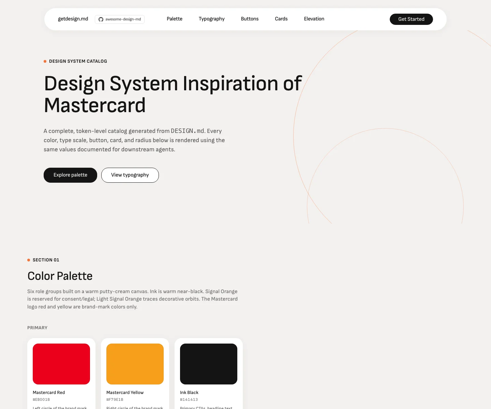

Mastercard 的 Design.md 主题展示，围绕金融科技、暖色调、编辑/机构、数据仪表盘组织页面。
Global payments network. Warm cream canvas, orbital pill shapes, editorial warmth.

#EB001B: #EB001B#000000: #000000#ffffff: #ffffff#a0a0a0: #a0a0a0#fbbf24: #fbbf24#8a8a8a: #8a8a8a#0a0a0a: #0a0a0a#e0e0e0: #e0e0e0display: Geistbody: Intermono: ui-monospacehints: Geist,Inter,ui-monospacecontrol: 7pxcard: 7pxpreview: 7pxpill: 9999pxsource: design-mdxxs: 36pxxs: 44pxsm: 0.72pxmd: 14pxlg: 6pxxl: 24pxxxl: 16pxxxxl: 0.32pxsection: 1pxsection-lg: 30pxhero: 13pxband: 0.13pxspace-13: 48pxspace-14: 999pxspace-15: 8pxspace-16: 20pxsource: design-md